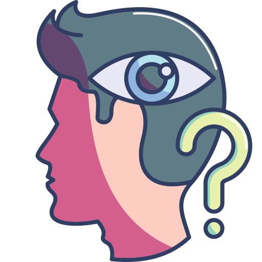
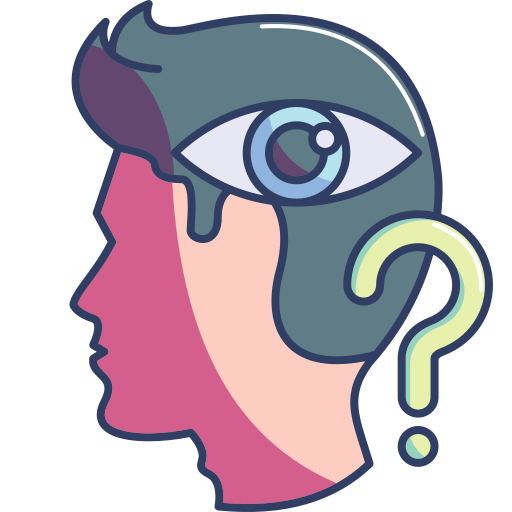

Contexto Histórico
Foto contextual 1
El surrealismo surgió oficialmente en 1924 con la publicación del Manifiesto Surrealista por el poeta francés André Breton. Este movimiento artístico y literario tuvo su auge en las décadas de 1920 y 1930, en un contexto marcado por la crisis social y cultural tras la Primera Guerra Mundial. Aunque nació en Francia, su influencia se expandió rápidamente y encontró eco en países como España, México, Estados Unidos, Bélgica y Reino Unido. A lo largo del siglo XX, el surrealismo dejó una huella profunda en las artes visuales, la literatura, el cine y la filosofía, y su legado aún se percibe en el arte contemporáneo.
El surrealismo estuvo profundamente influenciado por las teorías del psicoanálisis de Sigmund Freud, especialmente la importancia del inconsciente, los sueños y los deseos reprimidos. Los surrealistas buscaban representar este mundo interior en sus obras, liberándose de la lógica, la moral y las convenciones sociales. Este enfoque los llevó a desarrollar técnicas como la escritura automática, el dibujo libre y la interpretación de sueños como método creativo.
Foto o ícono representativo
 
